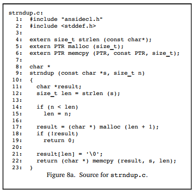

Describing Executable Code
In the previous sections, we discussed how DIEs describe data and types, and how to describe data locations. This section will continue to explore how to describe executable code. We will mainly introduce the description of functions and compilation units.
Describing Functions
Different programming languages and developers may have varying terms for functions, such as functions with return values (function) and routines without return values (subroutine). We consider them as two different variants of the same thing, and DWARF uses DW_TAG_subprogram to describe them. This DIE has a name, a triplet representing the location in the source code (DW_AT_decl_file, DW_AT_del_line), and an attribute indicating whether the subprogram is visible externally (compilation unit) (DW_AT_external).
In different programming languages, functions have different terms, such as routine, subroutine, subprogram, function, method, or procedure. For more details, refer to: https://en.wikipedia.org/wiki/Subroutine. We won't delve into the details of these differences here, just understand that
DW_AT_subprogramis used to describe functions.
Function Address Range
The function DIE has attributes DW_AT_low_pc and DW_AT_high_pc to give the upper and lower bounds of the memory address space occupied by the function. In some cases, the memory address of the function may be continuous or not. If not continuous, there will be a list of memory ranges. Generally, the value of DW_AT_low_pc is the function entry point address, unless another address is explicitly specified.
Function Return Type
The return type of the function is described by the attribute DW_AT_type. If there is no return value, this attribute does not exist. If the return type is defined within the same scope as this function, the return type DIE will be a sibling DIE of this function DIE.
Note: In practice, testing with Go, it is found that the Go compilation toolchain does not use
DW_AT_typefor the return type, as Go supports multiple return values, and this attribute alone is insufficient. Therefore, Go uses other solutions, which will be introduced below.
Function Parameter List
A function may have zero or more formal parameters, described by the DIE DW_TAG_formal_parameter. These parameter DIEs are placed after the function DIE, and the order of the parameter DIEs follows the order in which they appear in the parameter list, although the parameter type DIEs may be scattered. Typically, these formal parameters are stored in registers.
Function Local Variables
The function body may contain local variables, listed by the DIE DW_TAG_variables after the parameter DIEs. Usually, these local variables are allocated on the stack.
Lexical Blocks
Most programming languages support lexical blocks. A function may have some lexical blocks, which can be described by the DIE DW_TAG_lexcical_block. Lexical blocks can also contain variable and lexical block DIEs.
Example Explanation
Below is an example describing a C language function. You can see a DIE <5> named strndup of type DW_TAG_subprogram, which is the DIE describing the function strndup. The return type of this C function is determined by the DW_AT_type attribute to be *char, a 4-byte pointer. Continuing, we see two parameter DIEs of type DW_TAG_formal_parameter corresponding to the parameters s and n, where s is determined to be of type const char * and n is of type unsigned int. The positions of s and n in memory are at fbreg+0 and fbreg+4, respectively.

The generated DWARF debugging information is shown below:

This example is taken from DWARF v4, sections 5.3.3.1.1 to 5.3.3.1.6. This example is not complex, and the author has highlighted the key information. Combined with the previous content, readers should not find it difficult to understand. If you still don't understand, you can refer to the detailed description in the relevant sections of DWARF v4.
Compilation Unit
Most programs contain multiple source files. When generating a program, each source file is treated as an independent compilation unit and compiled into an independent *.o file (e.g., in C). The linker then links these object files, system-specific startup code, and system libraries together to generate the complete executable program.
Note: In Go, each source file is not a compilation unit; instead, the package is considered a compilation unit.
DWARF uses the term "compilation unit" from C language as the name for the DIE DW_TAG_compilation_unit. The DIE contains general information about the compilation, including the directory and filename of the source file, the programming language used, the producer of the DWARF information, and offsets that help locate line numbers and macro information, etc.
If the compilation unit occupies continuous memory (i.e., it is loaded into a continuous memory area), the low and high memory addresses of the unit will have values, i.e., attributes: low address DW_AT_low_pc, high address DW_AT_high_pc. This helps the debugger more easily determine which compilation unit generated the instruction at a specific address. If the compilation unit occupies non-continuous memory, the compiler and linker will provide a list of memory addresses occupied by the code.
Each compilation unit is represented by a "Common Information Entry (CIE)", and besides the CIE, the compilation unit also contains a series of Frame Description Entries (FDE).
Go Multiple Return Values
Finally, a special note about Go: when describing the return type, Go does not use the attribute DW_AT_type.
The figure below shows the approach taken in C language. The C compiler adopts the method recommended by the DWARF standard here, such as parameter lists being described by DW_TAG_former_parameter, and return types by DW_AT_type. If there is no return value, this attribute does not exist.

However, Go language has special characteristics compared to C. Go needs to support multiple return values, so using DW_AT_type alone cannot fully describe the return value list. We can write a test program to verify that in Go v1.15, the recommended DW_AT_type in the DWARF specification is not used to describe the return type. In Go, the representation of return values, like the parameters in the parameter list, is still described by DW_TAG_formal_parameter, but it distinguishes whether the parameter belongs to the parameter list or the return value list through the attribute DW_AT_variable_parameter. A value of 0 (false) indicates it is a parameter, and 1 (true) indicates it is a return value.
Summary of This Section
This section introduced how DWARF describes program constructs related to executable code, such as functions and compilation units. Finally, it pointed out the special aspects of describing return values in Go language functions that support multiple return values. By now, readers should have a deeper understanding of how DWARF describes executable programs.